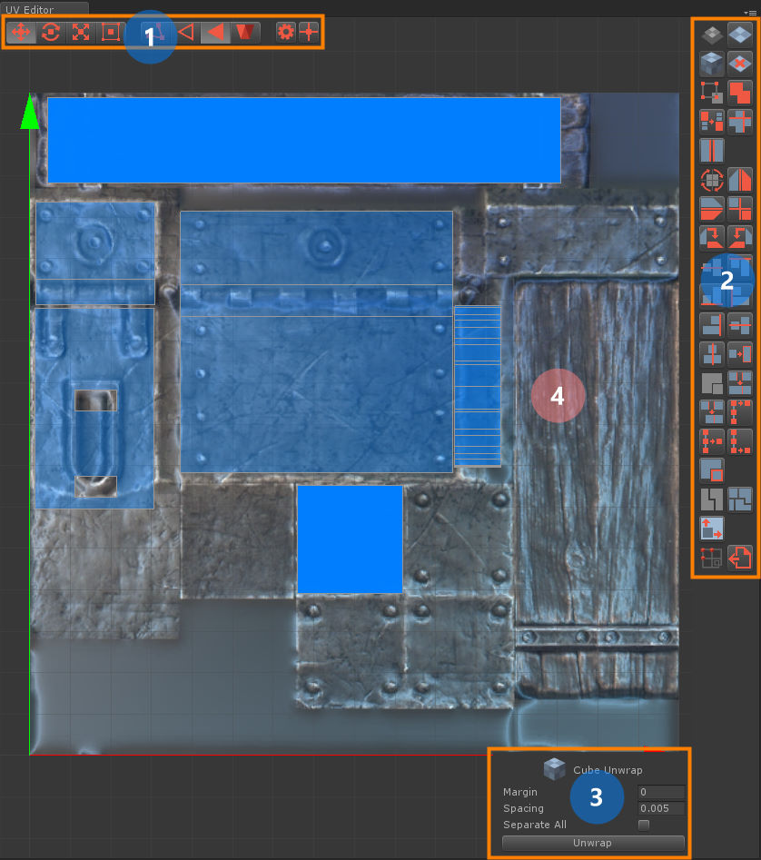
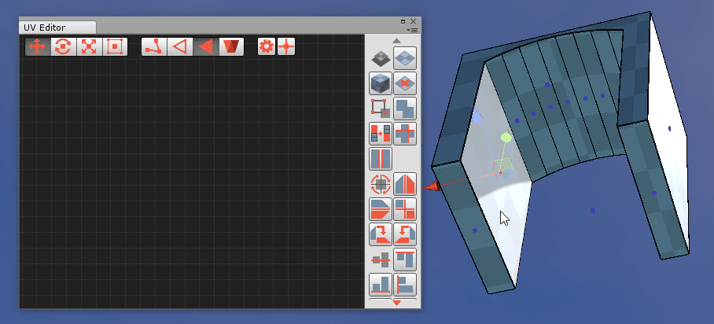
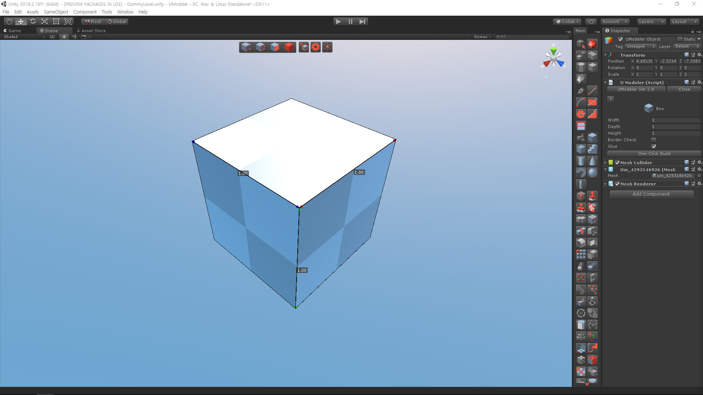
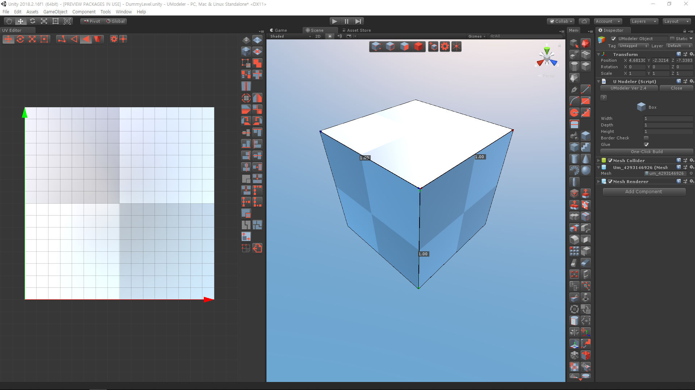
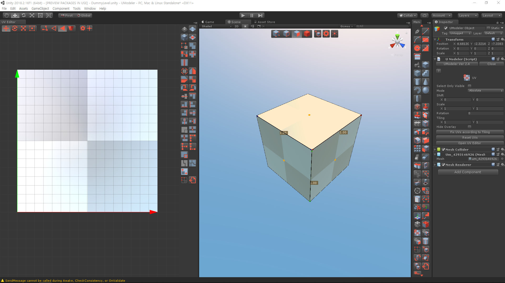
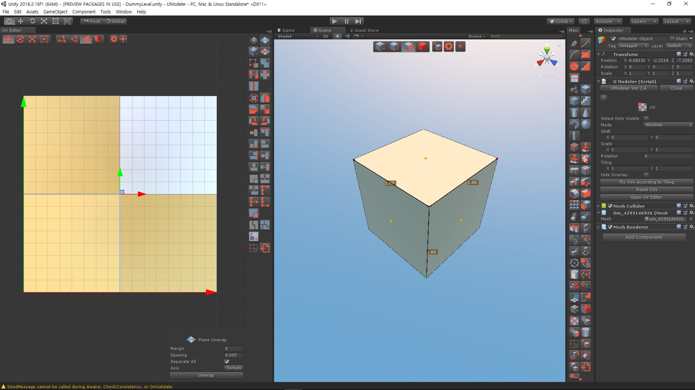
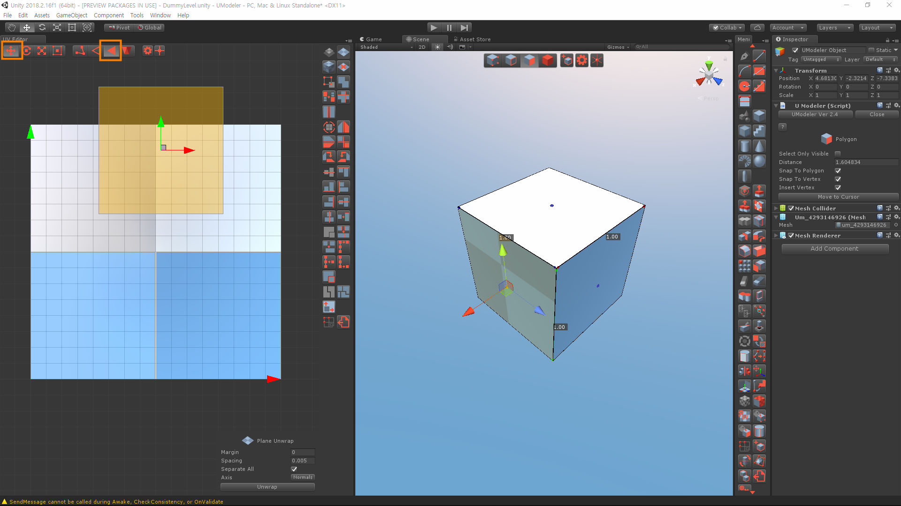

Overview¶
There are two ways of running UVEditor as follows.
- Select
Tools > UModeler > Open UVEditorin the upper menu or- Click on
Open UVEditorinSurfacegroup on the UModeler inspector.UVEditor with a UV map
{kind=link}
The UVEditor looks like the upper image and consists of three areas.
Toolbar- Most frequently used tools. 4 gizmos (Move, Rotate, Scale, Box), 4 elements (UV, Edge, Polygon, UV Island) and,SettingsandCursoricons from left to right.Menu- All tools’ icons are located here.Property- Properties of the current tool.Working Area- This is used for viewing and editing the UVs.
Automatic UV and Manual UV¶
The polygons created in UModeler basically have UVs, which have tiling charactericstic, generated automatically based on position and normal of each vertex. From UModeler 2.0 those UVs can be unwrapped and edited manually using UVEditor. Both types of UVs can exist in one mesh at the same time.
Auto Layout¶
LMB Double click on a polygon to automatically unwrap and stitch it. This is a very handy way of unwrapping polygons.
Auto Layout
{kind=link}
Keyboard¶
W |
Translate Gizmo |
E |
Rotate Gizmo |
R |
Scale Gizmo |
T |
Rect Gizmo |
CTRL+Z |
Undo |
CTRL+Y |
Redo |
Holding SHIFT |
Separate Transform |
Holding CTRL |
Continuous Selection |
Holding Alt or Cmd |
Camera panning |
Getting Started¶
- 
Create a box using
Box Tool - 
Go to
Tools > UModeler > UV Editorat the top menu of the editor or, selectUV Tooland pressUV Editorbutton. - 
Select three polygons visible from the camera.
- 
Press
Unwrapbutton inPropertieswindow. Then you can check out that the selected polygons are unwrapped. - 
Select
Move ToolandPolygon Toolon the toolbar and move a unwrapped polygon using the gizmo in UV Editor.
{kind=link}
{kind=link}
{kind=link}
{kind=link}
{kind=link}
{kind=link}
{kind=link}